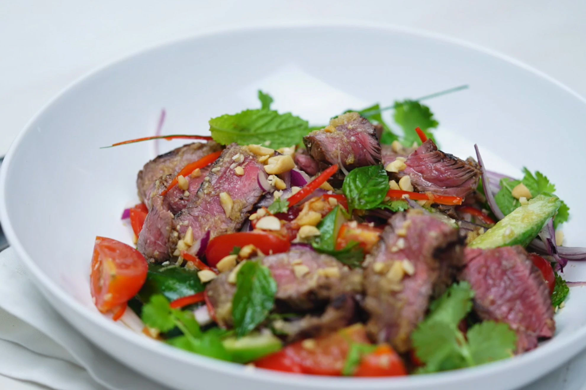

Thai Beed Salad

Description
Thai cuisine is one of contrasts and Thai beef salad is a perfect example.
In the dressing alone, sweet meets salty, spicy and sour and in the salad intense chilli meets gentle aromatic herbs and cooling cucumber, all coming together in perfect harmony.
Ingridients
- 1 1/2 tbsp fresh lime juice
- 1 garlic clove (crushed)
- 1 tbsp finely chopped palm sugar
- 1 tbsp fish sauce
- 2 tbsp sesame oil
- 1 tbsp coles asis soy sauce
- 680g beef rump steak
- 200g pkt grape tomatoes, quartered
- 1 continental cucumber, halved lengthways, thinly sliced diagonally
- 1 red onion, halved, cut into thin wedges
- 2 long fresh red chillies, halved, deseeded, thinly sliced lengthways
- 1 bunch fresh mint, leaves picked, large leaves torn
- 1 bunch fresh coriander, leaves picked
- 1 bunch fresh Thai basil, leaves picked, large leaves torn
- 55g (1/3 cup) toasted peanuts, coarsely chopped
- 4 makrut lime leaves, centre veins removed, finely shredded
Steps
- Whisk together lime juice, garlic, fish sauce, sesame oil, soy sauce, ginger and palm sugar in a jug. Place the steak in a glass or ceramic dish. Drizzle with half the dressing.
Cover with plastic wrap and place in the fridge, turning occasionally, for 2 hours to develop the flavours
- Preheat a barbecue grill or chargrill pan on high. Cook steak on grill for 2-3 minutes each side for medium or until cooked to your liking.
Transfer to a plate. Cover with foil and set aside for 10 minutes to rest.
- Place the tomato, cucumber, onion, chilli, mint, coriander, basil, peanuts and lime leaves in a large bowl. Thinly slice steak across the grain and add to the salad.
Drizzle with remaining dressing and gently toss to combine. Divide salad among bowls and serve immediately.
Home